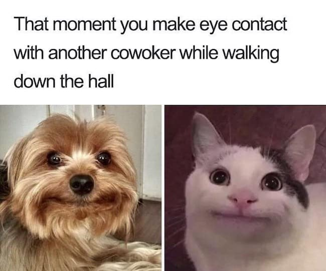
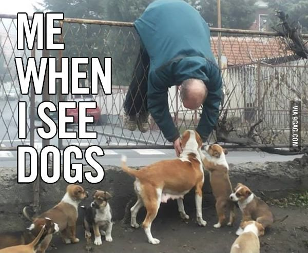

Introverted:

As an introverted person, I find most in not all interactions uncomfortable or awkward, and not reacting often makes it worse... So smiling to the other person as an effort of acknowledgment helps.
Dog Lover:

I love animals and mostly dogs and I often can't help but want to pet puppies when ever I see them, I think they're the cutest and most loving animals ever and they deserve all the love in the world and to live longer lives.
Adventurous
I believe in trying things at least once, obviously unless they result in addiction and/or death.